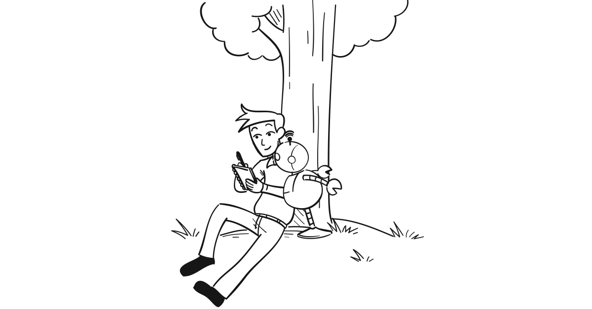
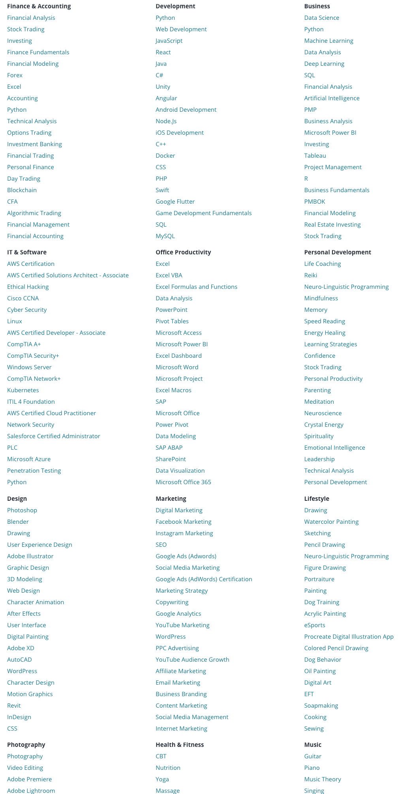

"You know who you are, you don't know who you may be"
--Jay-Z
When I mentor people, if there is one piece of advice I always give, it is to never stop learning.
Learning how to get better at what I do, or learning new things, are key drivers for me (except when I was in school - probably due to my French rebellious nature at the time!).
Over the last couple years alone, I have learned a wide range of things: from programming (Python), APIs, database (SQL), low-code platforms (Caspio and Bubble) to vector design (Adobe Illustrator), digital publishing (Adobe InDesign), the inner workings of a new industry (Business Aviation) and some of its specifics (like how inflight satellite communications work), the Robotic Process Automation industry, and some of its tools, to cooking and skateboarding (not sure if that last one is part of the weirdest mid-life crisis but I like rolling around town on my skateboard now, especially with my kids in tow! :).
I’m no expert at any of these, but proficient enough to do things on my own, or, for the business skills, hire the right people to do the work, converse with them in “their language”, ask (mostly) the right questions, and see opportunities for things do be done better/differently.
In the years before that, I always made sure to learn what I needed to get better at my job, but also to get the next promotion, or to prepare for a change (in life or career).
Constant learning has been a critical key to my successes (failures do still happen though!).
Constant learning is now even emphasised in mainstream media, as the only parade everyone can and should apply, as more and more tasks will be automated and AI used to replace some of what humans are doing now.
To paraphrase Darwin, it is not the strongest that thrives but the most adaptable.
Learn now, reap benefits later
If you want to improve your current work, learn to sharpen your skills. Improving yourself will make you feel better, make work more fun, and people around you will appreciate you more.
If you want a promotion that encompasses new responsibilities, start learning now what you will need then.
If you want a career change, start learning now the new skills you will need for it.
And if you want to have fun, just learn skateboarding :)
Warren Buffet says knowledge compounds.
Elon Musk talks about knowledge as a tree.
What you are learning now might not always provide immediate gains, but it will later, as you will draw from it to make new connections, and understand things you would not have before.
I love the quote "Luck is when opportunity meets preparation".
Constantly learning is ensuring you are prepared when the opportunity comes. It helps stack the odds in your favour and "get lucky" (well, not in the Daft Punk way!).
Best though is always to learn with a specific project in mind. Something you want to do or achieve. This helps putting what you are learning in context.
How to learn
These days, learning almost anything has been made extremely easy thanks to the combination of devices available (we all carry the world's knowledge in our pockets!) and resources shared online.
Read
I have found that reading a couple books on any given topic, puts you already in a higher bracket of people operating in that field. At least from a knowledge perspective.
Starting to learn a new topic can feel overwhelming though. The 1st book I read when starting to learn programming felt like reading Chinese. I got perhaps 10% of it at the time! (so better than Chinese then)
But it's important to read, cover to cover. Brush over parts of it if it’s painful, but make sure you go through it. You will come across unknown words, that you can either lookup, or by encountering them a few times, in different context, you will start getting an understanding of what it is and/or what it does, based on context.
In my case, with Python programming, by the 3rd book, I got what the 1st one was trying to explain! (note: reach out to me if you want guidance/resources for learning Python).
Finding time to read, when juggling a busy life between work, family, social activities and fun, is one of the biggest challenge though. It was for me, especially after having kids.
What unlocked it again for me was:
Audiobooks: I used to “look down” on audiobooks (“it’s not proper reading”) but it’s actually great. You assimilate similarly I find, and most importantly, you can squeeze listening much easier into busy days than actual reading (ie while doing laundry, driving, etc..). Highly recommend Audible (part of Amazon), and its low-cost monthly subscription (new credit every month encourages you to select/buy books). Some topics will not be suitable for audio obviously (eg programming). But to this day, the majority of my “reading” happens with audiobooks.
Kindle: especially having both the device and the apps, enables to read a bit further, no matter where you are and what device you have with you.
Blogs and following thought leaders in the space you are interested in, are obviously a great way to the "never stop learning" approach. But complementing this with books, which are usually better thought-through, structured and in-depth, is critical.
Take online courses
YouTube is the go-to platform where everyone goes to watch how something is done.
While YouTube videos are part of my learning arsenal (using 4K Video Downloader to download a video - sometimes a whole channel at once - to watch videos offline at my leisure), it is by far not the best.
There are lots of platforms these days dedicated to help you learn almost any skill or topic. I use Udemy. You can find courses on almost anything you can think of:

Courses are generally 10-15 $/EUR/£ on sale (which happen monthly it seems) and provide well structured, reviewed content.
The ability to jump to specific chapters, and to listen to presentations at an accelerated pace (eg x1.5 so voice is not too distorted) make it extremely effective.
I now have a library of 50+ courses, and keep adding to it and getting back to them, when I need them for a particular task.
Note: Oh how I would have loved being able to "accelerate" the delivery of presentations by teachers in real-life! :)
Do
In order for knowledge to sink in, it needs to be applied.
If you are learning something to get better at your work, select a particular task or project and learn what you need to solve it.
If you are learning to get a promotion or change career, start writing your plan of what you would do if you had the job. Identify the missing skills/knowledge, and learn them. Enrich your plan. And then share your plan (for example with your boss or whoever can make that promotion happen).
Know where to find the answers
In a world where knowledge is available at everyone's fingertips, it is not important to know everything on top of your head.
But it is good to know where things are.
Start doing, and when you hit a wall, you'll remember that the answer was in the middle of that book, or blog post you read about. Or in that chapter in an online course you bought.
And for things you'll need repeatedly, take notes in a central repository. A note-taking app (I use Ulysses which is also my writing app) or, for programming, a code snippet app (I use SnippetsLab) for example in my case.
Disclaimer
I thrive on learning new things. Which makes me no expert at anything - a "Nic-of-all-trades". I am not saying you should constantly keep learning new things - that's just me.
Obviously, "never stop learning" can (and should) apply if you rather would prefer to become an expert at one thing. In that case, your learning and reading will just have to be deeper into that one topic. But I would make the case that learning things that are not directly related to your topic, but in its periphery, will make you even better.
If you have any inputs, experience you want to share or strategy/tools that are helping you to never stop learning, please comment! I'm always trying to learn how to learn better! :)